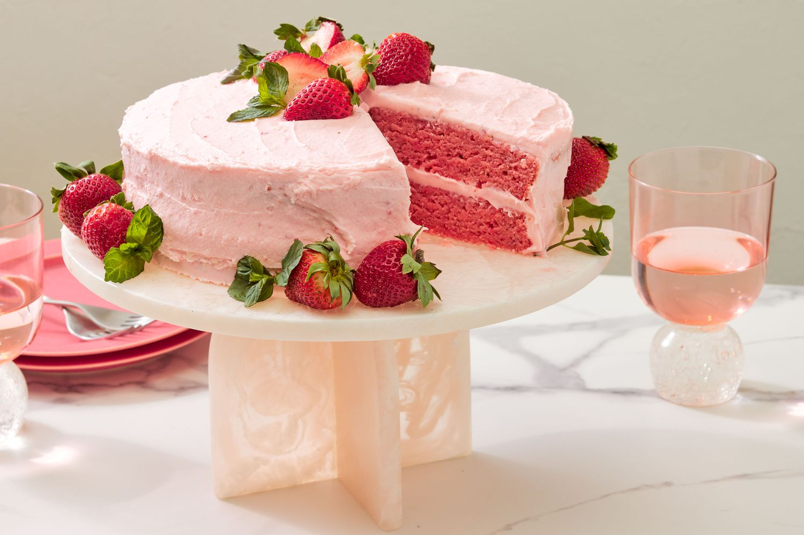

Strawberry Cake Recipe

Strawberry Cake
This strawberry cake tastes like it came straight from a bakery — but it's surprisingly easy to make at home!
Ingredients:
- Sugar
- Butter
- Jell-O
- Eggs
- Flour
- Baking Powder
- Milk
- Strawberries
- Vanilla
Steps:
- Beat the butter, sugar, and jell-O together. Add the eggs.
- Combine the dry ingredients.
- Put the dry mixture into the wet mixture with milk.
- Add remaining ingredients and transfere to cake pan.
- Bake in a preheated oven until a toothpick comes out clean.